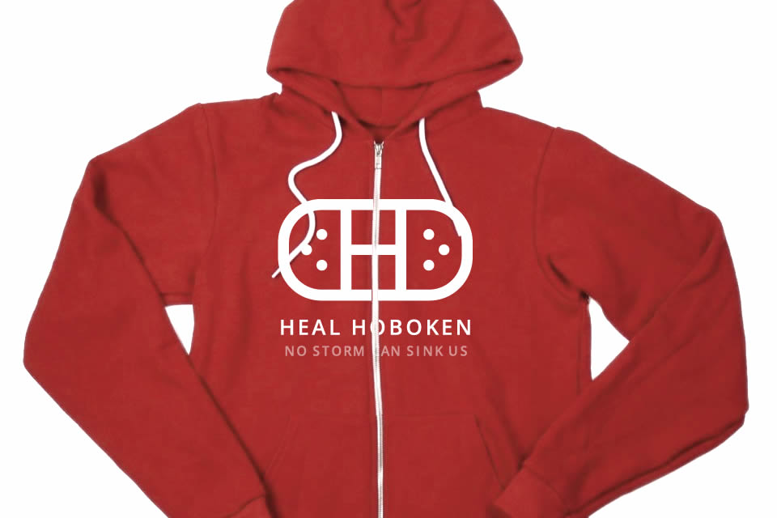

by the NJ Tech Meetup Community in Hoboken
No Storm Can Sink Us



If you don’t live here, you may not know much about Hoboken, perhaps outside of Carlo's Bakery and the place you pass through to get to NYC. But to many of us, it's home. It's where we meet friends, send our kids to school, and fight for places to park. It's also where we host the monthly NJ Tech Meetup, and many of us from the group have teamed up to Heal Hoboken.
Last week Hurricane Sandy ravaged the state. Over 50% of Hoboken was flooded. Schools, homes, and hospitals were damaged or destroyed.
And tonight, as we launch HealHoboken, more than 50% of the town remains without power and many are homeless or living in a shelter on this 43 degree night.
New Jersey and the country have come together in amazing ways during Hurricane Sandy. The few in Hoboken who had power during the storm setup power strips out of their windows, put out free coffee for all, and salvaged trick or treating to give our children (including mine) a Halloween they could always remember for how it brought out the best in people, instead of the worst in a storm.
Today, we need your help. A bunch of us from the NJ Tech Meetup - which gathers monthly in Hoboken to feature startups and speakers - have teamed together to help Heal Hoboken. To make that happen we need you.
Jack designed this awesome site and the clothing, Danny lent his technical wizardry to make it work, Adam gave us a name and shared with us his touching photos. Scott offered Positive Internet’s services to host this site. And now we need you.
With your help, let's raise over $100,000 to help Heal Hoboken.
Let's rebuild the Hoboken Boys & Girls Club. Let's rebuild the schools that are closed indefinitely for our children. Let's help our neighbors get back on their feet.
Buy a tshirt or a hoodie and wear it with pride. You’ll be representing a town that doesn’t give up, that doesn’t let each other down, and whose perseverance no storm can sink.
And if you’re feeling really generous, we’ll include a couple of nights to visit us at the W Hotel Hoboken.
All proceeds to go to the Hoboken Relief Fund (once it's verified, otherwise to the American Red Cross).
Sincerely,
Aaron Price
Proud Hoboken Resident
founder, NJ Tech Meetup @NJTech
FAQ
Collaborators